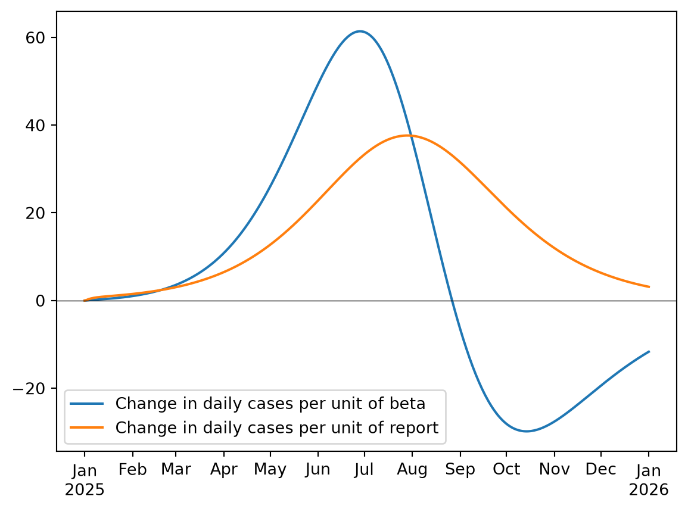
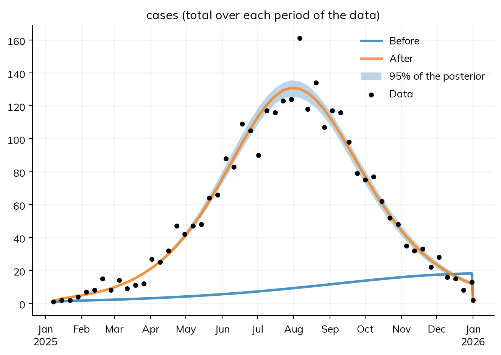

For a deterministic model, run as an ODE, Starsim can work out how each result changes as each parameter changes: the gradient, or the derivatives of the results with respect to the parameters. It does this by automatic differentiation with JAX, which follows the calculation of the run step by step, rather than by rerunning the model with slightly different values. Gradients make several things possible:
Fitting many parameters quickly, with an optimizer that follows the gradient (the default for an ODE with three or more fitted parameters).
Drawing from the posterior (the distribution of values consistent with the data and the priors) with the No-U-Turn sampler, NUTS, a Hamiltonian Monte Carlo method that uses the gradient to move through the space of parameters efficiently.
Seeing which parts of the epidemic a parameter affects, and by how much.
This page assumes the basics of Fitting a model. Gradients need JAX (pip install "starsim[jax]"), a model that runs as an ODE, and one whose whole run is compiled: a rate that calls a Python function, a module written as code, or a movement register rules them out, and the fit says which when it can’t use gradients. JAX runs on a GPU if it finds one; if it can’t use it (e.g. its CUDA plugin is of another version than JAX), run it on the CPU with ss.options.jax = 'cpu' (or the environment variable STARSIM_JAX=cpu) before it is first used.
The model
The model is a measles outbreak in a town of 100,000, 90% of whom are immune, with two unknowns: the transmission rate beta and the share of cases reported, report. Reported cases are counts, so their likelihood is a Poisson: it says how the data vary around the model’s value. The data are a year of weekly cases drawn from a run with beta = 1.9 and report = 0.5:
import numpy as npimport matplotlib.pyplot as pltimport starsim as ssS, E, I, R = ss.states('S E I R')beta = ss.par(1.5, bounds=[0.5, 4]) # Transmission rate per dayreport = ss.par(0.3, bounds=[0.05, 1]) # Share of cases reportedinfection = S >> E @ beta*Ionset = E >> I @ ss.days(10)recovery = I >> R @ ss.days(8)cases = ss.outcome(report*onset, likelihood=ss.poisson())measles = ss.Disease(infection, onset, recovery, cases, init=dict(I=0.0001, R=0.9))pars =dict(total_pop=100_000, start='2025-01-01', stop='2026-01-01')truth = ss.Sim(measles, pars=dict(beta=1.9, report=0.5), rand_seed=2, **pars)truth.run()data = truth.to_data('cases', resample='week')
Starsim kernels: Rust, OUT OF DATE (built before its source last changed, so results may be wrong): run "./build" in starsim/solvers/rust/
Sim: measles, 100,000 people, as an ODE, 2025-01-01 to 2026-01-01
measles: R0 = 15.2 (R = 1.52 at the start, with 10% susceptible), with 10 infectious at the start
Done in 0.003 s; measles: 5,856 infections; at most 298 infectious, on 2025-08-05
The gradient of a result
sim.gradient() gives the derivative of each result, at each time, with respect to each parameter with bounds, at the parameters’ current values. Here, at the true values, for the daily reported cases:
grad = truth.gradient('cases')fig, ax = plt.subplots()t = truth.results.timevecax.plot(t, grad.beta.measles.cases, label='Change in daily cases per unit of beta')ax.plot(t, grad.report.measles.cases, label='Change in daily cases per unit of report')ax.axhline(0, color='k', lw=0.5)ax.legend();
Compiling the run with JAX, estimated time: 0.2-5 s
E1031 14:52:22.516404 1545680 cuda_executor.cc:1439] [0] Failed to allocate device memory of 2.76GiB (2967470080 bytes): RESOURCE_EXHAUSTED: : CUDA_ERROR_OUT_OF_MEMORY: out of memory
=== Source Location Trace: ===
external/xla+/xla/stream_executor/cuda/cuda_status.cc:45
external/xla+/xla/stream_executor/cuda/cuda_device_allocator.cc:242
external/xla+/xla/stream_executor/cuda/cuda_device_allocator.cc:510
E1031 14:52:22.516461 1545680 cuda_executor.cc:1439] [0] Failed to allocate device memory of 2.49GiB (2670723072 bytes): RESOURCE_EXHAUSTED: : CUDA_ERROR_OUT_OF_MEMORY: out of memory
=== Source Location Trace: ===
external/xla+/xla/stream_executor/cuda/cuda_status.cc:45
external/xla+/xla/stream_executor/cuda/cuda_device_allocator.cc:242
external/xla+/xla/stream_executor/cuda/cuda_device_allocator.cc:510
E1031 14:52:22.516493 1545680 cuda_executor.cc:1439] [0] Failed to allocate device memory of 2.24GiB (2403650816 bytes): RESOURCE_EXHAUSTED: : CUDA_ERROR_OUT_OF_MEMORY: out of memory
=== Source Location Trace: ===
external/xla+/xla/stream_executor/cuda/cuda_status.cc:45
external/xla+/xla/stream_executor/cuda/cuda_device_allocator.cc:242
external/xla+/xla/stream_executor/cuda/cuda_device_allocator.cc:510
E1031 14:52:22.516520 1545680 cuda_executor.cc:1439] [0] Failed to allocate device memory of 2.01GiB (2163285760 bytes): RESOURCE_EXHAUSTED: : CUDA_ERROR_OUT_OF_MEMORY: out of memory
=== Source Location Trace: ===
external/xla+/xla/stream_executor/cuda/cuda_status.cc:45
external/xla+/xla/stream_executor/cuda/cuda_device_allocator.cc:242
external/xla+/xla/stream_executor/cuda/cuda_device_allocator.cc:510
E1031 14:52:22.516547 1545680 cuda_executor.cc:1439] [0] Failed to allocate device memory of 1.81GiB (1946957056 bytes): RESOURCE_EXHAUSTED: : CUDA_ERROR_OUT_OF_MEMORY: out of memory
=== Source Location Trace: ===
external/xla+/xla/stream_executor/cuda/cuda_status.cc:45
external/xla+/xla/stream_executor/cuda/cuda_device_allocator.cc:242
external/xla+/xla/stream_executor/cuda/cuda_device_allocator.cc:510
E1031 14:52:22.516572 1545680 cuda_executor.cc:1439] [0] Failed to allocate device memory of 1.63GiB (1752261120 bytes): RESOURCE_EXHAUSTED: : CUDA_ERROR_OUT_OF_MEMORY: out of memory
=== Source Location Trace: ===
external/xla+/xla/stream_executor/cuda/cuda_status.cc:45
external/xla+/xla/stream_executor/cuda/cuda_device_allocator.cc:242
external/xla+/xla/stream_executor/cuda/cuda_device_allocator.cc:510
E1031 14:52:22.516596 1545680 cuda_executor.cc:1439] [0] Failed to allocate device memory of 1.47GiB (1577035008 bytes): RESOURCE_EXHAUSTED: : CUDA_ERROR_OUT_OF_MEMORY: out of memory
=== Source Location Trace: ===
external/xla+/xla/stream_executor/cuda/cuda_status.cc:45
external/xla+/xla/stream_executor/cuda/cuda_device_allocator.cc:242
external/xla+/xla/stream_executor/cuda/cuda_device_allocator.cc:510
E1031 14:52:22.516620 1545680 cuda_executor.cc:1439] [0] Failed to allocate device memory of 1.32GiB (1419331328 bytes): RESOURCE_EXHAUSTED: : CUDA_ERROR_OUT_OF_MEMORY: out of memory
=== Source Location Trace: ===
external/xla+/xla/stream_executor/cuda/cuda_status.cc:45
external/xla+/xla/stream_executor/cuda/cuda_device_allocator.cc:242
external/xla+/xla/stream_executor/cuda/cuda_device_allocator.cc:510
E1031 14:52:22.516644 1545680 cuda_executor.cc:1439] [0] Failed to allocate device memory of 1.19GiB (1277398016 bytes): RESOURCE_EXHAUSTED: : CUDA_ERROR_OUT_OF_MEMORY: out of memory
=== Source Location Trace: ===
external/xla+/xla/stream_executor/cuda/cuda_status.cc:45
external/xla+/xla/stream_executor/cuda/cuda_device_allocator.cc:242
external/xla+/xla/stream_executor/cuda/cuda_device_allocator.cc:510
E1031 14:52:22.516667 1545680 cuda_executor.cc:1439] [0] Failed to allocate device memory of 1.07GiB (1149658112 bytes): RESOURCE_EXHAUSTED: : CUDA_ERROR_OUT_OF_MEMORY: out of memory
=== Source Location Trace: ===
external/xla+/xla/stream_executor/cuda/cuda_status.cc:45
external/xla+/xla/stream_executor/cuda/cuda_device_allocator.cc:242
external/xla+/xla/stream_executor/cuda/cuda_device_allocator.cc:510
E1031 14:52:22.516691 1545680 cuda_executor.cc:1439] [0] Failed to allocate device memory of 986.76MiB (1034692096 bytes): RESOURCE_EXHAUSTED: : CUDA_ERROR_OUT_OF_MEMORY: out of memory
=== Source Location Trace: ===
external/xla+/xla/stream_executor/cuda/cuda_status.cc:45
external/xla+/xla/stream_executor/cuda/cuda_device_allocator.cc:242
external/xla+/xla/stream_executor/cuda/cuda_device_allocator.cc:510
E1031 14:52:22.516715 1545680 cuda_executor.cc:1439] [0] Failed to allocate device memory of 888.08MiB (931222784 bytes): RESOURCE_EXHAUSTED: : CUDA_ERROR_OUT_OF_MEMORY: out of memory
=== Source Location Trace: ===
external/xla+/xla/stream_executor/cuda/cuda_status.cc:45
external/xla+/xla/stream_executor/cuda/cuda_device_allocator.cc:242
external/xla+/xla/stream_executor/cuda/cuda_device_allocator.cc:510
E1031 14:52:22.516738 1545680 cuda_executor.cc:1439] [0] Failed to allocate device memory of 799.27MiB (838100480 bytes): RESOURCE_EXHAUSTED: : CUDA_ERROR_OUT_OF_MEMORY: out of memory
=== Source Location Trace: ===
external/xla+/xla/stream_executor/cuda/cuda_status.cc:45
external/xla+/xla/stream_executor/cuda/cuda_device_allocator.cc:242
external/xla+/xla/stream_executor/cuda/cuda_device_allocator.cc:510
Compiling the gradient with JAX, estimated time: 0.2-5 s

A higher β brings the epidemic forward: more cases before the peak, and fewer after it, when the susceptible people have already been used up. A higher reporting share scales every week’s cases up in proportion. Because the two parameters change the curve in different ways, the data can tell them apart. Two parameters whose gradients had the same shape could only be fitted as a combination (see Parameter identification).
The result is indexed by parameter, then module, then result: grad.beta.measles.cases is an array with one value per time step.
sim.gradient() also takes a function of the run sim, which can be anything that returns a number or an array, e.g. a total cost. Its gradient is worked out from the same run in JAX, so it needs no JAX of your own:
total =lambda sim: sim.results.measles.cases.sum()truth.gradient(total)
A parameter with a value for each level of a stratification (ss.par(ss.by(patch=[...]), bounds=...)), an array, or a time series has a gradient for each value, named as a fit names them. A time series fitted value by value is a way to estimate a transmission rate that changes in time, with no shape assumed for it:
S, E, I, R = ss.states('S E I R')days =list(range(0, 365, 28)) # A value every four weeks, in between which it changes linearlybeta = ss.par(ss.timeseries(days, [1.5]*len(days), 'linear'), bounds=[0.5, 4])onset = E >> I @ ss.days(10)cases = ss.outcome(0.5*onset, likelihood=ss.poisson()) # The share reported, taken as known heremeasles_t = ss.Disease(S >> E @ beta*I, onset, I >> R @ ss.days(8), cases, init=dict(I=0.0001, R=0.9))smooth =lambda pars: 100*np.sum(np.diff(pars['beta'].values)**2) # Large changes from one value to the next are unlikelyfit_t = ss.Sim(measles_t, data=data, **pars).fit(penalty=smooth, verbose=False)fit_t.table[['par', 'best']]
Compiling the gradient of the log-likelihood with JAX, estimated time: 0.5-5 s
par
best
0
beta[0]
1.918595
1
beta[28]
1.916439
2
beta[56]
1.900488
3
beta[84]
1.900612
4
beta[112]
1.884848
5
beta[140]
1.876173
6
beta[168]
1.878942
7
beta[196]
1.919381
8
beta[224]
1.922676
9
beta[252]
1.895464
10
beta[280]
1.867158
11
beta[308]
1.849456
12
beta[336]
1.841664
13
beta[364]
1.841134
The data were made with a beta of 1.9 throughout, which the fit finds. Without penalty=, the values early in the year, when there are few cases, would wander, since the data say little about them; the penalty keeps each close to its neighbors.
With many values, what the fit minimizes is differentiated in reverse mode, which takes one pass whatever the number of values, and a long run is checkpointed so that the memory it takes grows only as the square root of its length. Neither is a setting.
The log-density
sim.log_density() gives the log of the posterior density of the fitted parameters (the log-likelihood of the data, plus the log of the priors), as a function of their values, together with its gradient. It is what a sampler or optimizer of your own would use:
Parameters: ['beta', 'report']
At the starting values: [1.5 0.3]
Compiling the log-density with JAX, estimated time: 0.5-5 s
Log-density: -4062.247149731211
Its gradient: [17585.4521548 8140.69349146]
The gradient is positive for both parameters: at the starting values (1.5 and 0.3), increasing either would make the data more likely.
A best fit with gradients
sim.fit() uses the gradient by default when a deterministic model has three or more fitted parameters ('l-bfgs-b'); with one or two, Nelder–Mead, which needs no gradient, is faster. Either can be asked for:
fit = sim.fit(method='l-bfgs-b')fit.table
Using the likelihood: the sum of the log-likelihoods of cases, treated as independent
Searching on a log scale: report
Converged: the best two of 3 searches, from points of the scan that are apart, ended within 0.1 of each other (objective values 165.8 at beta=1.901, report=0.4965; 165.8 at beta=1.901, report=0.4965; 165.8 at beta=1.901, report=0.4965; 35 evaluations)
The negative log-likelihood is 165.8 at the best values and 4061 at the initial values
par
initial
best
low
high
0
beta
1.5
1.900596
0.50
4.0
1
report
0.3
0.496542
0.05
1.0
Every data series here has a likelihood, so this is the maximum likelihood estimate. If a parameter has a prior (ss.par(1.5, bounds=[0.5, 4], prior=ss.normal(2, 0.2))), the best fit is instead the most probable value, given the data and the prior.
A posterior with NUTS
A best fit is one set of values. A posterior is the whole distribution of values that are consistent with the data, which says how certain each value is, and how the parameters depend on each other. method='nuts' draws from it, given a likelihood for every data series. The priors are each parameter’s prior=, or uniform over its bounds:
post = sim.fit(method='nuts', draws=250, warmup=250)post.summarize();
Using the likelihood: the sum of the log-likelihoods of cases, treated as independent
Searching on a log scale: report
Compiling the NUTS sampler with JAX, estimated time: 1-10 s
NUTS: 4 chains on 4 cores, each of 250 warm-up draws and then 250 draws: compiled in 7.0 s, sampled in 1.3 s
Converged: R-hat at most 1.002 and effective sample size at least 541, with 0 divergent draws
The negative log-likelihood is 165.8 at the best values and 4061 at the initial values
Fitted 2 parameter(s) by nuts
Negative log-likelihood: 4061 before, 165.8 after
Converged: R-hat at most 1.002 and effective sample size at least 541, with 0 divergent draws
Posterior: 1,000 draws from 4 chains (best: the draw with the highest posterior density; median, lower, and upper: the median and 95% interval of the posterior)
Each chain of the sampler starts at a different point, spends warmup= draws tuning itself, and then makes draws= draws (500 of each by default; fewer here to keep this page quick). The table gives, for each parameter, the median of the posterior and its 95% interval (lower and upper), with two checks that the chains agree: the R-hat (rhat), which should be at most 1.01, and the effective sample size (ess), the number of independent draws the correlated draws are worth. Fit diagnostics says what to do if they fail.
The draws themselves are in post.samples, one row for each:
The two are negatively correlated: a slightly higher β gives a slightly larger epidemic, which a slightly lower reporting share brings back to the same number of reported cases.
Profile likelihoods
A profile likelihood is another way to find a confidence interval for one parameter, without priors: at each value of it, the other parameters are refitted, and the values whose negative log-likelihood is within 1.92 of the lowest form the 95% confidence interval. It also shows whether the data determine the parameter at all: a profile that stays flat up to a bound means they don’t.
prof = ss.fit.profile(sim, 'beta', values=np.linspace(1.86, 1.94, 9))print('Best value of beta:', round(prof.best, 3))print('95% confidence interval:', np.round(prof.interval, 3))prof.table
Best value of beta: 1.9
95% confidence interval: [1.889 1.912]
beta
report
nll
within
0
1.86
0.520199
188.918039
False
1
1.87
0.513876
178.955670
False
2
1.88
0.507900
171.765666
False
3
1.89
0.502242
167.373662
True
4
1.90
0.496859
165.795570
True
5
1.91
0.491725
167.038396
True
6
1.92
0.486852
171.101033
False
7
1.93
0.482197
177.975010
False
8
1.94
0.477757
187.645208
False
Without values=, ss.fit.profile() chooses the values itself, spread over the bounds and then concentrated around the best, which takes longer. Plotting the profile:
The interval agrees with the posterior’s above. A profile needs a deterministic model whose data series all have a likelihood, and parameters without priors.
Projecting from a posterior
fit.project() runs the fitted model under each scenario, once for each of n draws from the posterior, with the same draws (and seeds) in every scenario. Each draw has a seed of its own, so the spread of the runs is the uncertainty in the fitted values, carried into the projection, together with chance. Here, a vaccination campaign on 1 April that reaches half the town, compared with none:
Since the model is deterministic, each run differs only in its parameter values, so the interval is the uncertainty from the fit alone. For a stochastic model, the runs would also differ by chance.
The same draws show the fit against the data: the model’s weekly cases at the starting values and at the best values, with 95% of the posterior as a band:
post.plot()

Other samplers
NUTS is for deterministic models. For a stochastic model, the likelihood can’t be differentiated, and the other posterior methods apply (see Fitting a model):
method='pmcmc', particle MCMC, for a stochastic compartmental model (e.g. solver='binomial') whose data series all have a likelihood: the likelihood at each point is estimated by running many copies of the model (particles) and weighting them by how well they match each data point.
method='abc-smc', approximate Bayesian computation, for any model, including agents: it keeps the values whose runs come closest to the data, and needs no likelihood.
method='if2', iterated filtering, finds the maximum likelihood values of a stochastic compartmental model with particles.
A posterior can also be put together by hand, by sampling-importance resampling, which needs only runs of the model and a likelihood: draw many sets of values from the priors and run each (ss.parallel(sim, priors=True, n_runs=1000), whose msim.runs has the values of each run), work out the likelihood of the data for each run, and resample the runs in proportion to their likelihoods. It is simple and works for any model, but most draws from a wide prior land where the likelihood is negligible, so it needs many runs for few parameters, and fails for many.
How the gradients are computed (the run in JAX, and the steps around it) is explained in Randomness.